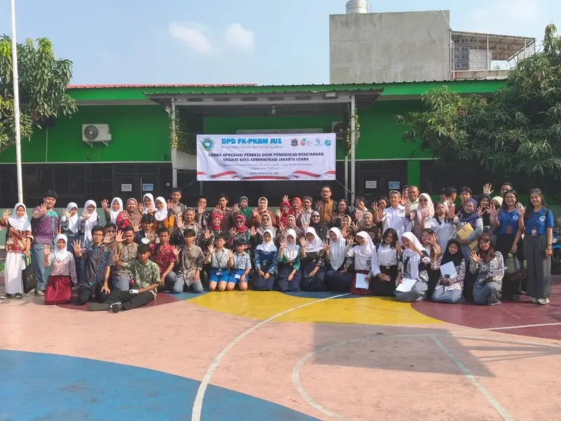
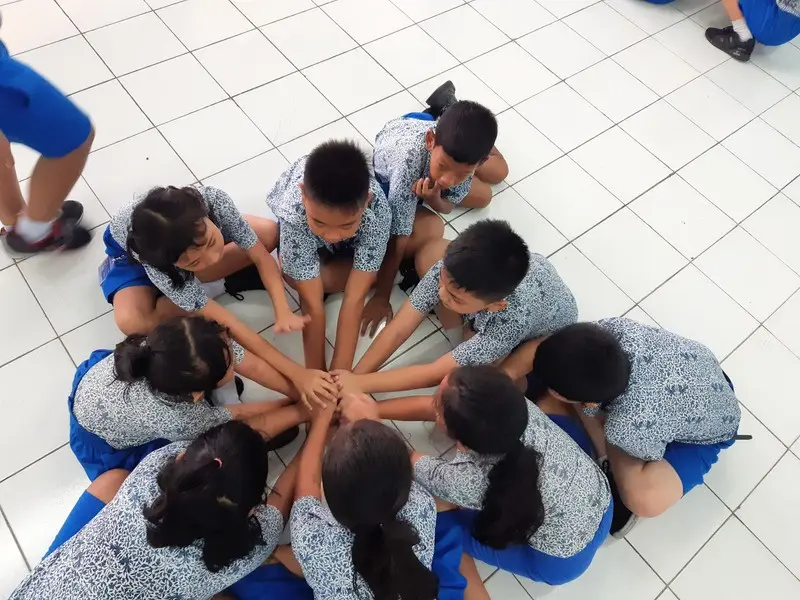
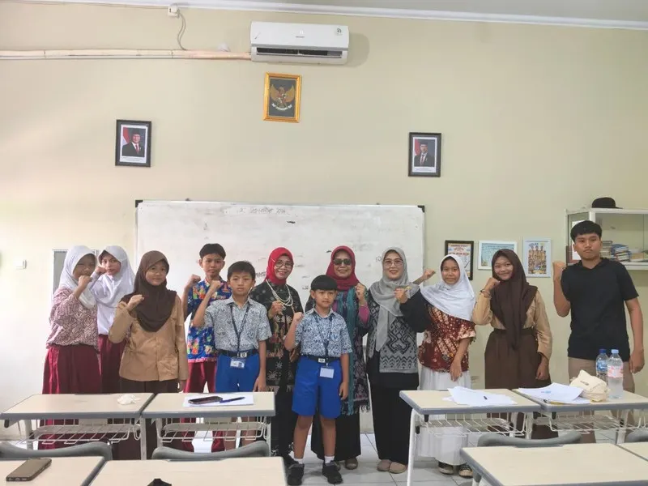
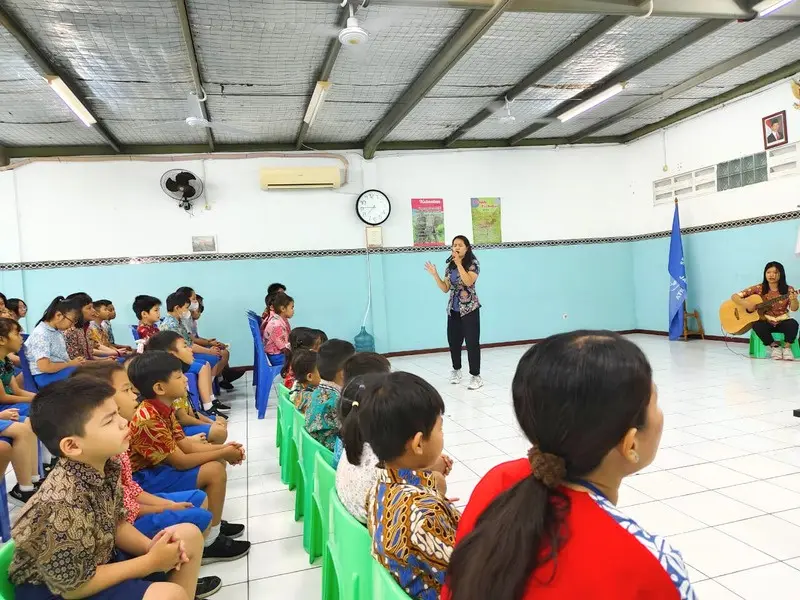
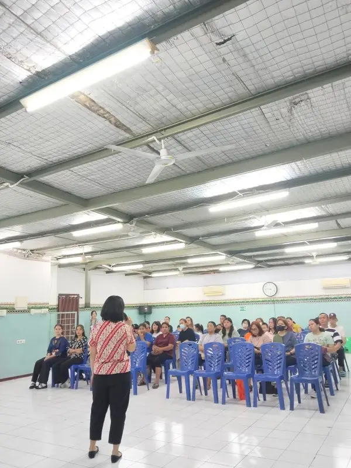

Lomba Apresiasi Peserta Didik Pendidikan Kesetaraan Jakarta Utara
Murid MBBN ikut ambil bagian dalam lomba tingkat kota untuk mengasah potensi, kreativitas, dan rasa percaya diri.
Sekolah Mutiara Bagi Bangsa Nusantara
“Selamatkanlah mereka dengan jalan merampas mereka dari api.” Yudas 1:23
Kami percaya lebih baik menjangkau anak sejak usia dini. Melalui pendidikan yang berpusat kepada Kristus dan pembentukan karakter setiap hari, kami mendampingi anak bertumbuh cerdas, berkarakter, dan takut akan TUHAN.

“Menghormati TUHAN dengan membangun bangsa melalui pendidikan yang berpusat kepada Kristus.”


Sekolah MBBN berdiri pada Juli 2005 dengan 45 murid TK dari keluarga pra-sejahtera dan 8 guru. Kini kami melayani jenjang PAUD dan SD (PKBM) di Pluit, Jakarta Utara, sekaligus menjadi pusat pelatihan bagi guru dari berbagai daerah di Indonesia.
Selengkapnya tentang kami →Kurikulum Merdeka dipadukan dengan pendidikan karakter, dalam suasana belajar yang hangat dan berpusat kepada Kristus. Kedua jenjang sudah terakreditasi.

Karakter Kristus menjadi pusat sejak usia dini, dikenalkan lewat pembelajaran interaktif dengan berbagai media: cerita Alkitab, lagu, permainan, dan karya tangan.

Matematika, IPAS, dan Bahasa diajarkan sebagai jendela untuk mengenal TUHAN Sang Pencipta, sambil membangun dasar akademik yang kuat.

Murid MBBN ikut ambil bagian dalam lomba tingkat kota untuk mengasah potensi, kreativitas, dan rasa percaya diri.
Memperingati Hari Batik, anak-anak PAUD membuat motif batik sederhana sambil mengenal kekayaan budaya Indonesia.

Penerimaan rapor bayangan, saat orang tua dan guru bersama melihat perkembangan belajar setiap anak.
Baca buletin sekolah tiga bulan terakhir dalam format flipbook.
[Kesaksian alumni: pengalaman belajar di MBBN dan bagaimana MBBN membentuk hidupnya hari ini.][Nama Alumni]Alumni angkatan [tahun] · kini [pekerjaan/studi]